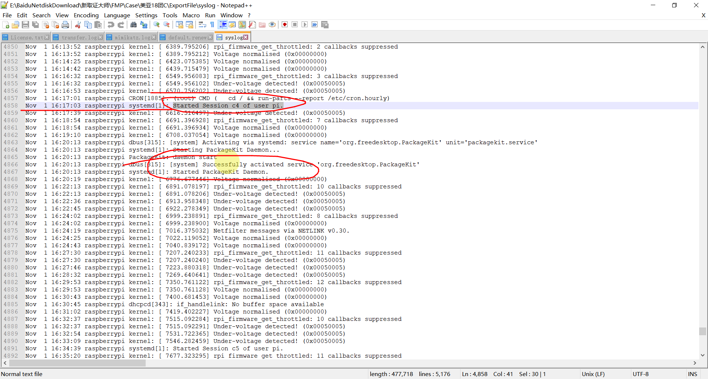

[单选题] 第C部份 (第 43 至 54 题) : 根据镜像文件 “Streaing Server.E01” 的内容，回答关于荣科数码(RKD)的流媒体服务器的问题。
43.荣科数码(RKD)的流媒体服务器的主机名称是什么? (1分)
A. pi
B. Streaming Service
C. C&C Server
D. RKD
E. raspberrypi
标记本题
E
[单选题] 44.黑客首次进入流媒体服务器的时间是什么? （答案格式 －“世界协调时间＂：YYYY-MM-DD HH:MM UTC） (1分)
A. 2018-11-01 16:17
B. 2018-11-01 08:34
C. 2018-11-01 08:17
D. 2018-11-01 01:17
E. 2018-11-01 00:42
标记本题
C
时间问题先考虑时区
这道题可以通过log日志来看\var\log
其中btmp是登录失败的日志，如果出现数据很多的话可能存在暴力破解
这里我们查看syslog
数据比较多，可以先根据时间大体锁定，然后根据连接成功语句来锁定
其实也可以在wtmp这里查看，不过这是个二进制文件需要linux的ls命令

[单选题] 45.下面哪一个是流媒体服务器 “eth0” 的网络地址(IP Address)? (1分)
A. 10.0.4.10
B. 10.0.4.15
C. 192.168.7.11
D. 192.168.7.12
E. 192.168.7.103
标记本题
A
也可以把选项带入搜，更准确
[单选题] 46.下面哪一个是流媒体服务器 “wlan0” 的网络地址(IP Address)? (1分)
A. 10.0.4.10
B. 10.0.4.15
C. 192.168.7.11
D. 192.168.7.12
E. 192.168.7.103
标记本题
E
带入搜更准

[单选题] 47.下面哪一个是流媒体服务器曾经同步时间的网络时间协议(NTP)服务器的网络地址(IP Address)? (1分)
A. 192.168.7.1
B. 10.0.4.1
C. 110.115.125.123
D. 203.95.213.129
E. 220.246.55.208
标记本题
D
同样去syslog中，搜索同步时间的标注timesyncd

[单选题] 48.在流媒体服务器中，根据账户”pi”的指令记录，黑客首次输入指令 “cat /etc/shadow” ，他从中获得了什么信息? (1分)
A. 流媒体服务器内的用户名称
B. 流媒体服务器内的用户密码
C. 流媒体服务器内的用户密码更换日期
D. 流媒体服务器的网络位置
E. 因没有权限，什么信息也得不到
标记本题
E
看到他输入的是终端的命令，想到分析他终端的数据内容
紧接着下一条sudo cat /etc/shadow
猜测这条权限不够
而且查询pi用户，他不是root用户所以权限很低，印证推测
[单选题] 49.在流媒体服务器中，账户”pi”曾在流媒体服务器安装了什么软件? (i) nmap (ii) arp-scan (iii) bind9 (1分)
A. (i)
B. (ii)
C. (iii)
D. (i)、(ii) and (iii)
E. (ii) and (iii)
标记本题
D
在/var/log/apt/history.log中记录使用apt-get安装卸载软件的信息
还可以在取证那搜索install
[单选题] 50.为什么黑客在流媒体服务器安装 “bind9”? (1分)
A. 为取得流媒体服务器 “root” 的权限
B. 为记录键盘的记录
C. 为截取网络上的数据包
D. 为提供域名系统服务(DNS)
E. 为扫描网络中其他计算机的网络位置
标记本题
D
1 | 这道题不太明确 |
[单选题] 51.黑客把C&C服务器下载的档案sys.c放置在数据库服务器哪一个位置? (1分)
A. /
B. /home/
C. /home/root/
D. /home/rongke/
E. /home/auxsup/
标记本题
E
就是问这个文件在哪，直接搜
这个地方是用户的根目录下边

[单选题] 52.为什么黑客能够连接网路 10.0.4.0/24 ? (1分)
A. 因为此网路连接了互联网
B. 因为路由器中的访问控制列表(Access Control List)没作出限制
C. 因为流媒体服务器同时接驳了互联网及上述网路
D. 因为网络摄影机同时接驳了互联网及上述网路
E. 以上皆不是
标记本题
C
好像是说流媒体服务器既连接了互联网，又连接了10.0.4.10的这个网段
这个流媒体服务器接上的ip有10.0.4.10和10.0.4.15
所以推测
[单选题] 53.黑客在流媒体服务器加入了多少条防火墙规则? (1分)
A. 0
B. 1
C. 2
D. 3
E. 4
标记本题
C
加入防火墙规则涉及iptables命令

[单选题] 54.在流媒体服务器中，黑客何时在删除档案 “HACK.jpg”? （答案格式 －“本地时间＂：YYYY-MM-DD HH:MM:SS +8） (1分)
A. 2018-11-01 09:09:15 +8
B. 2018-11-01 17:12:40 +8
C. 2018-11-01 17:15:02 +8
D. 2018-11-02 09:09:15 +8
E. 2018-11-02 17:15:02 +8
标记本题
C